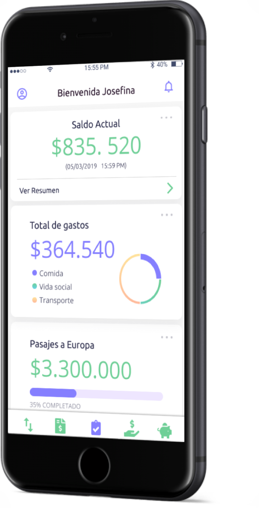
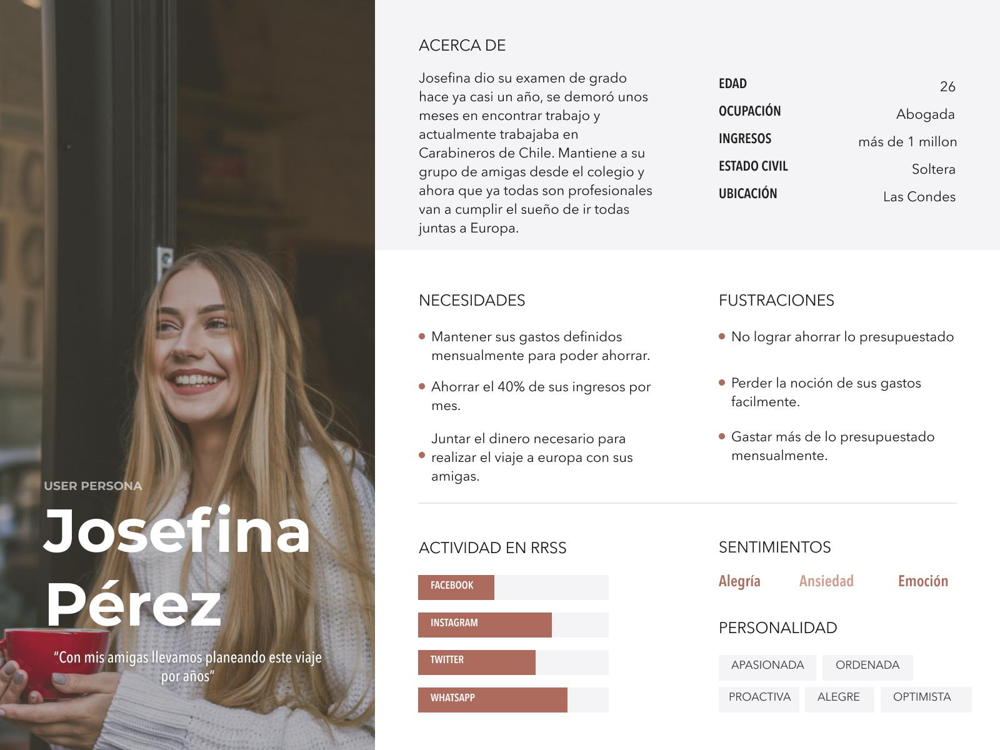
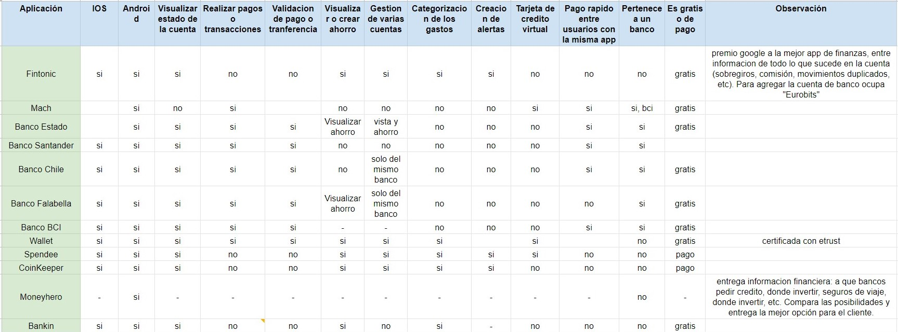
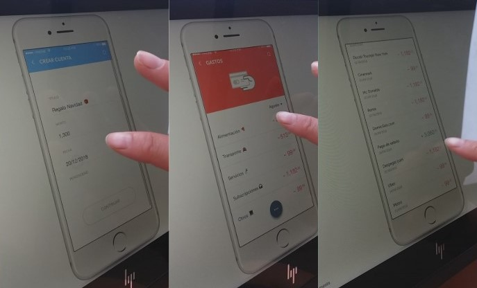
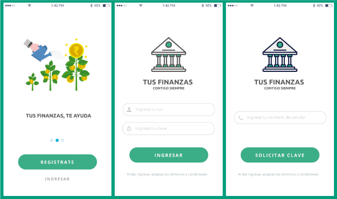
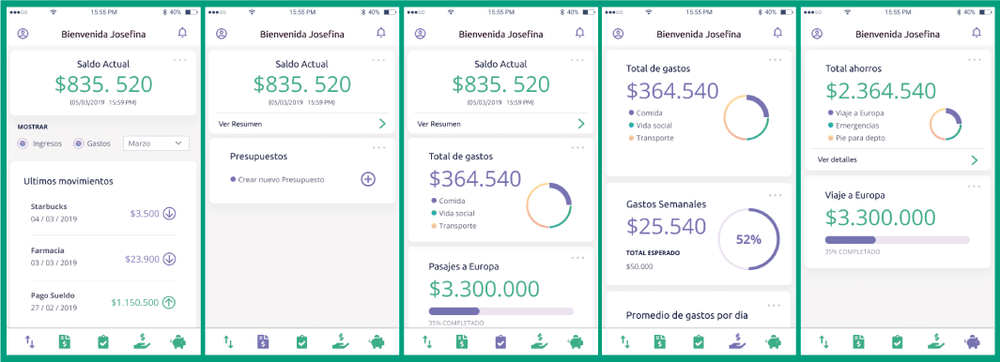
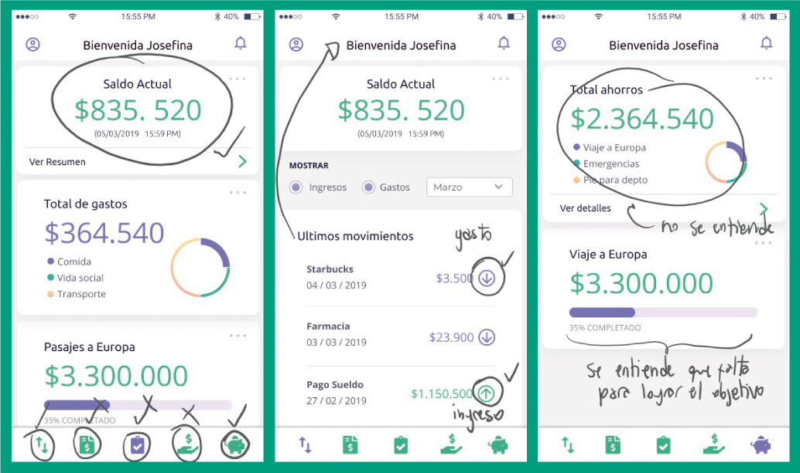
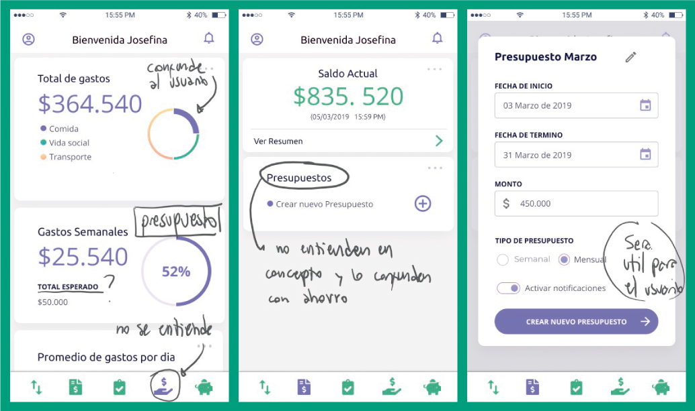

Este es un ejercicio individual planteado por la Laboratoria, el cual se nos presento de la siguiente forma:
"El banco más importante del país ha lanzado una nueva aplicación móvil al mercado para que sus usuarios puedan visualizar sus gastos mensuales y fomentar el ahorro. Esta fue desarrollada para IOS en un plazo de 2 meses y está dirigida a un segmento bastante específico, aquel usuario que tiene capacidad económica para ahorrar pero no lo consigue tan fácilmente debido a sus conductas".Definir la dirección y evolución que tomará la aplicación en el futuro, a partir del análisis de resultados de los primeros 6 meses, el feedback recibido en testeos y entrevistas a usuarios.
En una primera etapa analice toda la información que se entrego junto con el proyecto, en la que incluían las maquetas, data sobre la app y 2 user persona. Posterior a esto realice algunos testeos del flujo, encuestas y un benchamark con el fin de entender de mejor forma hacia donde dirigir las mejoras de la app.
La aplicación solo permite ingresar una cuenta bancaria y además debe ser de un banco determinado, y cuenta con las siguientes pantallas/etapas:
1. Registro: solicita en número de tu cuenta y número de celular, luego te envía un código al celular un código, posteriormente te solicita un correo electrónico y contraseña. Puedes agregar una fotografía a tu perfil y registrar tu huella para mayor seguridad.
2. Ingreso: correo electrónico y contraseña para acceder.
3. Inicio: te muestra una imagen de la tarjeta, el saldo disponible y las opciones disponibles movimientos, ahorros y gastos. Indica también el número de tarjeta.
4. Movimientos: saldo disponible en la parte superior y luego el listado de los últimos movimientos ya sean gastos o ingresos, puede seleccionar el mes y visualizar detalles de cada uno; fecha, hora y descripción del lugar.
5. Ahorros: muestra un listado de las metas de ahorro denominadas “cuentas de ahorro” en las que se puede definir; título monto, fecha y periodicidad.
6. Gastos: muestra una lista de los gastos agrupados por área y el monto, puede seleccionar el mes.
Los resultados de los primeros 6 meses nos indican lo siguiente:
Análisis de los User Persona entregados:
1. Fiorella 18 años, Las Condes : no sabe como se le va el dinero tan rápido, le gusta salir a comer con amigas. casi siempre usa tarjeta de débito, es fácil pagar así pero pierde el control de sus gastos y no ahorra. Todas las opciones que ha probado no le ayudan a ahorrar, nada es más efectivo que su agenda.
2. Diego 31 años, Providencia : vive solo y trabaja, siempre está atento a nuevos bares y restaurantes, quiere ahorrar para viajar a Europa. Busca un sistema de ahorro, porque siempre se gasta lo que pensaba ahorrar, quiere automatizar su ahorro.
En base a información obtenida por medio de la investigación, testeos y encuestas desarrolle un nuevo user persona, que se ajusta a un nuevo perfil identificado.

Revise un total de 12 aplicaciones en las cuales se encuentran apps bancarias, de gestión de dinero y tarjetas de crédito virtuales. A continuación puedes revisar la tabla comparativa:

Observe a 3 usuarios interactuando con el prototipo funcional de la versión actual de la app y los principales aprendizajes obtenidos de este proceso fueron:

Realice una encuesta a 25 usuarios de entre los 22 a los 55 años y los resultados más interesantes obtenidos son los siguientes:
Se determinaron 3 grandes necesidades como resultado de la síntesis del proceso de investigación:
1. Se incluyó un onboarding con el fin de amenizar el primer acercamiento del usuario a la aplicación.
2. Ahora para registrarse en la app ahora el usuario debe ingresar su rut algo a lo que ya se encuentra habituado.
3. Además se le solicita una verificación en 2 pasos que incluye una confirmación por medio del número de celular.

1. Se incluye un menú fijo en la parte inferior de la app, el cual permite acceder rápidamente a otra sección y a su vez indica en qué sección se encuentra actualmente.
2. Se creó la sección presupuestos, la que permite a los usuarios crear planificaciones de lo que pueden y quieren gastar, ya sea semanal o mensualmente.
3. Los gastos se muestran agrupados por temática.
Al crear un nuevo ahorro se muestra el % de completud de esta meta.


Puede testear 6 usuarios de entre los 20 a 40 años aproximadamente y el feedback recibido es el siguiente:
1. No todos los iconos del menú inferior son los suficientemente descriptivos.
En la barra superior se podría indicar en sección se encuentra el usuario.
3. Las flechas de últimos movimientos hacia arriba y abajo se entienden bien como ingreso y gasto.
4. El total de ahorros presentado en un gráfico de tortas es muy confuso para los usuarios.
5. La barra de completud presente en varios procesos fue bien entendida

1. Los gastos agrupados por temática les parecen interesantes a los usuarios pero no así la presentación en un gráfico de torta.
2. No entienden presupuestos, o confunden con ahorros.
3. El icono de gastos es el que menos se entiende.
4. Se debe evaluar la factibilidad de mantener la sección presupuesto ya que quizá no sea útil para el usuario.